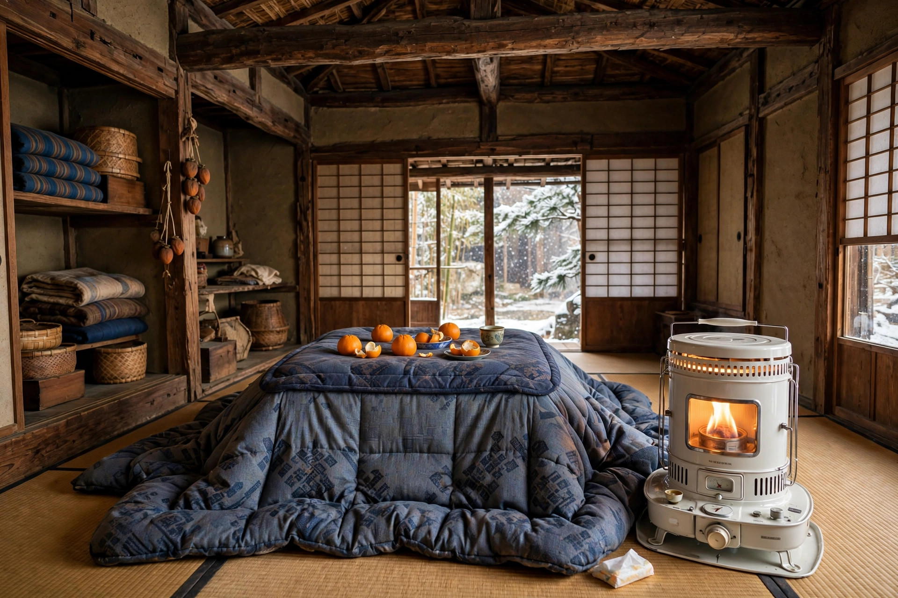
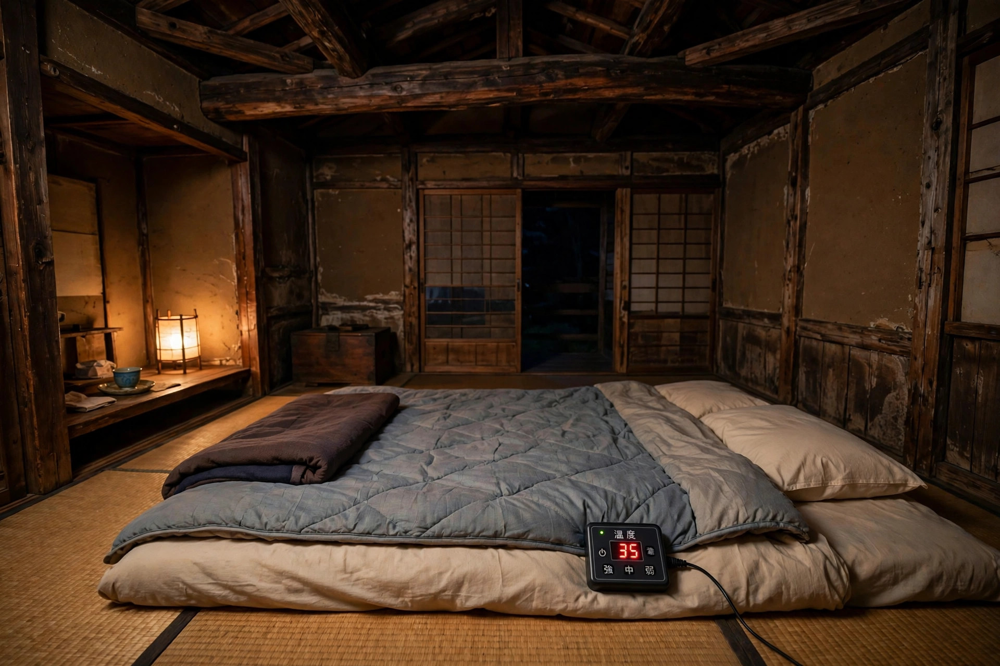
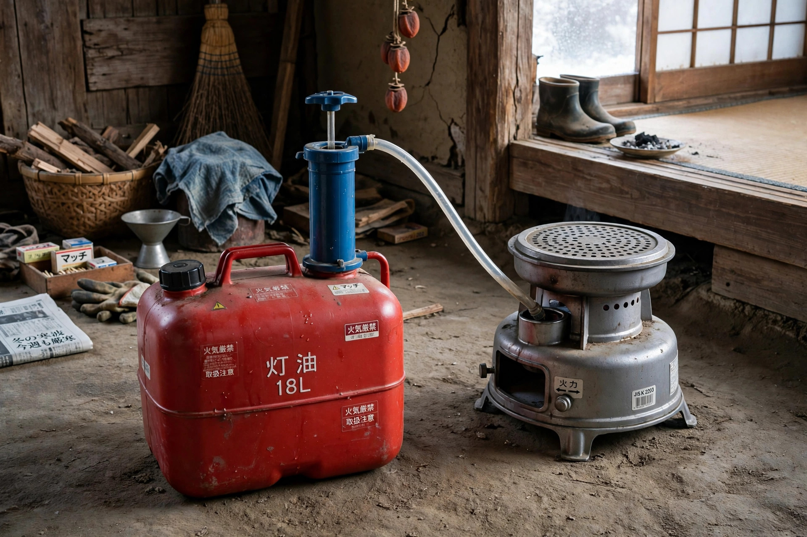

こたつ・灯油ストーブ・電気毛布｜古民家の暖房の使い分けと灯油の扱い

古民家は天井が高く、部屋も広く、建具の隙間も多い。エアコンやストーブ1台で部屋全体を暖めようとすると、燃料も電気代もかさみます。基本の考え方は「部屋全体」ではなく「人のいる場所だけを暖める」こと。その中心になる3つの暖房、こたつ・灯油ストーブ・電気毛布の使い分けを整理しました。
こたつ：居間の中心。一番安く「足元だけ」を暖める
こたつは、暖める範囲が布団の中だけなので、暖房の中では電気代が安い部類です。広い居間でも、人が集まる場所だけを確実に暖められます。古民家のように部屋全体を暖めにくい家では、まずこたつを中心に置くのが合理的です。
弱点は、上半身と、こたつから出た場所が寒いこと。こたつ単体で済ませようとせず、次に紹介する灯油ストーブと併用して「部屋の底冷えはストーブ、足元はこたつ」と役割を分けると快適さが上がります。
灯油ストーブ：立ち上がりの早さと、広い空間への強さ
灯油ストーブは点火してすぐ暖かくなり、土間や広い部屋でも力があります。種類は大きく2つです。
- 対流型・反射型（昔ながらの石油ストーブ）: 電気がいらないので停電時や屋外作業の休憩にも使える。部屋全体をじんわり暖める
- 石油ファンヒーター: 温風で早く暖まる。電気が必要で、運転音はある
使うときの注意は2つ。1つは換気で、使用中は1時間に1〜2回を目安に空気を入れ替えます。もう1つは、就寝時と外出時は必ず消すこと。火を使う暖房だという前提を忘れないのが大事です。
電気毛布：寝室は「部屋」ではなく「布団」を暖める

寝室までストーブで暖めるのは、燃料の無駄が大きい場所です。寝るときに必要なのは暖かい布団であって、暖かい部屋ではありません。電気毛布の電気代は1時間あたり1円前後が目安と、暖房の中でも桁違いに安く済みます。
使い方は、就寝30分ほど前に「強」で布団を温めておき、寝るときには「弱」に落とすか、タイマーで切れるようにしておくのが基本です。つけたまま強で寝続けると、低温やけどや脱水の心配があるので避けます。
場所別の使い分け
- 居間: 灯油ストーブ＋こたつ。部屋の底上げと足元の両方を取る
- 寝室: 電気毛布のみ。部屋は暖めない
- 脱衣所・トイレ: 滞在が短いので、使うときだけ小型の電気ヒーターを短時間
- 土間・作業場: 灯油ストーブ。広さと天井の高さに負けない火力が必要
窓まわりの断熱が進むと、必要な暖房そのものが小さく済むようになります。窓対策は窓の寒さ対策の記事、本格的な内窓の費用感は内窓リフォームの費用相場にまとめています。
灯油の扱い：保管と給油の基本

- 容器は灯油専用のポリタンク（赤いタンク）を使う。ガソリンなど他の燃料と混同しない
- 保管は直射日光と高温を避ける。物置や土間の涼しい場所に置き、火気の近くには置かない
- 給油は必ず消火してから。火がついたままの給油は絶対にしない。こぼれたら、その場で拭き取る
- シーズンを越した灯油は使わない。古い灯油は変質してストーブの故障や不完全燃焼の原因になるので、シーズン内に使い切るのが基本。余った分の処分は、購入した販売店や自治体の案内で確認する
暖房の使い分けで使うアイテム
- こたつ（布団セット）
- 灯油ストーブ／石油ファンヒーター
- 電気毛布（敷きタイプ）
- 灯油ポリタンク（18L）＋給油ポンプ
同じ用途のものはAmazonでも探せます（PR）
山善 電気毛布 敷き 140×80cm YMS-FKPTS41（タイマー付き・洗える）
まとめ
- 古民家の暖房は「部屋全体」ではなく「人のいる場所」を暖めるのが基本
- 居間は灯油ストーブ＋こたつ、寝室は電気毛布、と場所で分ける
- 灯油ストーブは換気と消火確認が前提。就寝・外出時は消す
- 灯油は専用タンクで涼しく保管し、シーズン内に使い切る